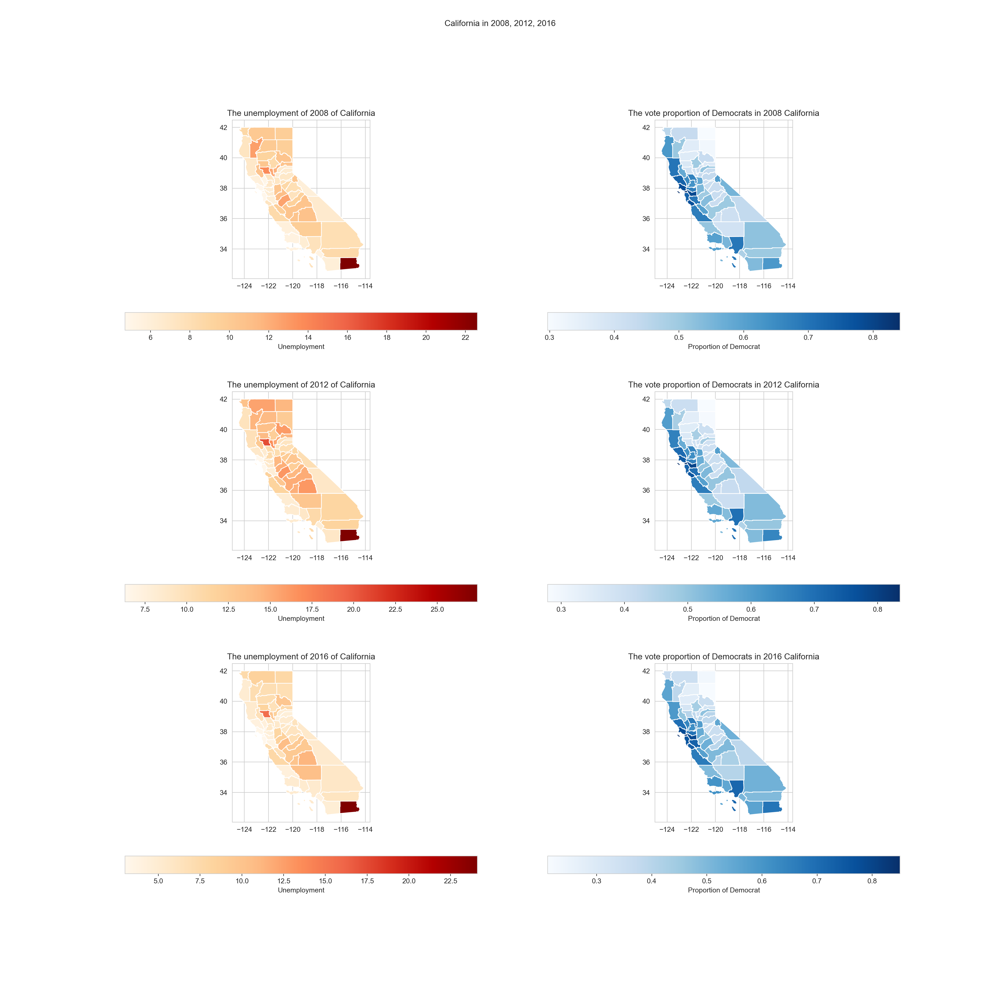

In this project I will visualize historical US election data and unemployment rates across US counties using choropleths. I will work on the comparison between democrats’ vote proportion and us unemployment rate in Texas, California and Pennsylvania, correspond to the years 2008, 2012 and 2016.
The presidential election dataset: This dataset contained the results of each presidential election from 2000 to 2016 by county + Source: MIT Election Data and Science Lab, 2018, “County Presidential Election Returns 2000-2016”, Harvard Datavers
The unemployment dataset: This dataset contained unemployment rates by county for the years 2000-2019. + Source: USDA Economic Research Service, 2020
import pandas as pd
import numpy as np
import matplotlib.pyplot as plt
import geopandas as gpd
import seaborn as sns
import warnings
sns.set_style("whitegrid")
color = sns.color_palette()
warnings.filterwarnings('ignore')usa = gpd.read_file("data/maps/tl_2019_us_county.shp")
usa["FIPS"] = usa["STATEFP"] + usa["COUNTYFP"]
usa['FIPS'] = usa['FIPS'].apply(lambda x: str(x).zfill(5))
election = pd.read_csv("data/election.csv")
election['FIPS'] = election['FIPS'].apply(lambda x: str(int(x)).zfill(5))
df_election = usa.merge(election, left_on="FIPS", right_on="FIPS")
TX_election = df_election.loc[df_election["state_po"].isin(["TX"])]
TX_election = TX_election.loc[TX_election["party"].isin(["democrat"])]
TX_election_2008 = TX_election[TX_election.year == 2008]
TX_election_2012 = TX_election[TX_election.year == 2012]
TX_election_2016 = TX_election[TX_election.year == 2016]
CA_election = df_election.loc[df_election["state_po"].isin(["CA"])]
CA_election = CA_election.loc[CA_election["party"].isin(["democrat"])]
CA_election_2008 = CA_election[CA_election.year == 2008]
CA_election_2012 = CA_election[CA_election.year == 2012]
CA_election_2016 = CA_election[CA_election.year == 2016]
PA_election = df_election.loc[df_election["state_po"].isin(["PA"])]
PA_election = PA_election.loc[PA_election["party"].isin(["democrat"])]
PA_election_2008 = PA_election[PA_election.year == 2008]
PA_election_2012 = PA_election[PA_election.year == 2012]
PA_election_2016 = PA_election[PA_election.year == 2016]
Unemployment = pd.read_csv("data/Unemployment.csv")
Unemployment['FIPStxt'] = Unemployment['FIPStxt'].apply(lambda x: str(x).zfill(5))
df_unemployment = usa.merge(Unemployment, left_on="FIPS", right_on="FIPStxt")
TX_unemployment = df_unemployment.loc[df_unemployment["Stabr"].isin(["TX"])]
CA_unemployment = df_unemployment.loc[df_unemployment["Stabr"].isin(["CA"])]
PA_unemployment = df_unemployment.loc[df_unemployment["Stabr"].isin(["PA"])]
warnings.filterwarnings('ignore')fig, ax = plt.subplots(3, 2, figsize=(20, 20))
fig.suptitle('Texas in 2008, 2012, 2016')
TX_unemployment.plot(column = "Unemployment_rate_2008", ax = ax[0, 0], legend=True,
legend_kwds={'label': "Unemployment",
'orientation': "horizontal"}, cmap='OrRd')
ax[0, 0].set_title('The unemployment of 2008 of Texas')
TX_election_2008.plot(column = "vote_rate", ax = ax[0, 1], legend=True,
legend_kwds={'label': "Proportion of Democrat",
'orientation': "horizontal"}, cmap='Blues')
ax[0, 1].set_title('The vote proportion of Democrats in 2008 Texas')
TX_unemployment.plot(column = "Unemployment_rate_2012", ax = ax[1, 0], legend=True,
legend_kwds={'label': "Unemployment",
'orientation': "horizontal"}, cmap='OrRd')
ax[1, 0].set_title('The unemployment of 2012 of Texas')
TX_election_2012.plot(column = "vote_rate", ax = ax[1, 1], legend=True,
legend_kwds={'label': "Proportion of Democrat",
'orientation': "horizontal"}, cmap='Blues')
ax[1, 1].set_title('The vote proportion of Democrats in 2012 Texas')
TX_unemployment.plot(column = "Unemployment_rate_2016", ax = ax[2, 0], legend=True,
legend_kwds={'label': "Unemployment",
'orientation': "horizontal"}, cmap='OrRd')
ax[2, 0].set_title('The unemployment of 2016 of Texas')
TX_election_2016.plot(column = "vote_rate", ax = ax[2, 1], legend=True,
legend_kwds={'label': "Proportion of Democrat",
'orientation': "horizontal"}, cmap='Blues')
ax[2, 1].set_title('The vote proportion of Democrats in 2016 Texas')fig, ax = plt.subplots(3, 2, figsize=(20, 20))
fig.suptitle('California in 2008, 2012, 2016')
CA_unemployment.plot(column = "Unemployment_rate_2008", ax = ax[0, 0], legend=True,
legend_kwds={'label': "Unemployment",
'orientation': "horizontal"}, cmap='OrRd')
ax[0, 0].set_title('The unemployment of 2008 of California')
CA_election_2008.plot(column = "vote_rate", ax = ax[0, 1], legend=True,
legend_kwds={'label': "Proportion of Democrat",
'orientation': "horizontal"}, cmap='Blues')
ax[0, 1].set_title('The vote proportion of Democrats in 2008 California')
CA_unemployment.plot(column = "Unemployment_rate_2012", ax = ax[1, 0], legend=True,
legend_kwds={'label': "Unemployment",
'orientation': "horizontal"}, cmap='OrRd')
ax[1, 0].set_title('The unemployment of 2012 of California')
CA_election_2012.plot(column = "vote_rate", ax = ax[1, 1], legend=True,
legend_kwds={'label': "Proportion of Democrat",
'orientation': "horizontal"}, cmap='Blues')
ax[1, 1].set_title('The vote proportion of Democrats in 2012 California')
CA_unemployment.plot(column = "Unemployment_rate_2016", ax = ax[2, 0], legend=True,
legend_kwds={'label': "Unemployment",
'orientation': "horizontal"}, cmap='OrRd')
ax[2, 0].set_title('The unemployment of 2016 of California')
CA_election_2016.plot(column = "vote_rate", ax = ax[2, 1], legend=True,
legend_kwds={'label': "Proportion of Democrat",
'orientation': "horizontal"}, cmap='Blues')
ax[2, 1].set_title('The vote proportion of Democrats in 2016 California')
fig, ax = plt.subplots(3, 2, figsize=(20, 20))
fig.suptitle('Pennsylvania in 2008, 2012, 2016')
PA_unemployment.plot(column = "Unemployment_rate_2008", ax = ax[0, 0], legend=True,
legend_kwds={'label': "Unemployment",
'orientation': "horizontal"}, cmap='OrRd')
ax[0, 0].set_title('The unemployment of 2008 of Pennsylvania')
PA_election_2008.plot(column = "vote_rate", ax = ax[0, 1], legend=True,
legend_kwds={'label': "Proportion of Democrat",
'orientation': "horizontal"}, cmap='Blues')
ax[0, 1].set_title('The vote proportion of Democrats in 2008 Pennsylvania')
PA_unemployment.plot(column = "Unemployment_rate_2012", ax = ax[1, 0], legend=True,
legend_kwds={'label': "Unemployment",
'orientation': "horizontal"}, cmap='OrRd')
ax[1, 0].set_title('The unemployment of 2012 of Pennsylvania')
PA_election_2012.plot(column = "vote_rate", ax = ax[1, 1], legend=True,
legend_kwds={'label': "Proportion of Democrat",
'orientation': "horizontal"}, cmap='Blues')
ax[1, 1].set_title('The vote proportion of Democrats in 2012 Pennsylvania')
PA_unemployment.plot(column = "Unemployment_rate_2016", ax = ax[2, 0], legend=True,
legend_kwds={'label': "Unemployment",
'orientation': "horizontal"}, cmap='OrRd')
ax[2, 0].set_title('The unemployment of 2016 of Pennsylvania')
PA_election_2016.plot(column = "vote_rate", ax = ax[2, 1], legend=True,
legend_kwds={'label': "Proportion of Democrat",
'orientation': "horizontal"}, cmap='Blues')
ax[2, 1].set_title('The vote proportion of Democrats in 2016 Pennsylvania')